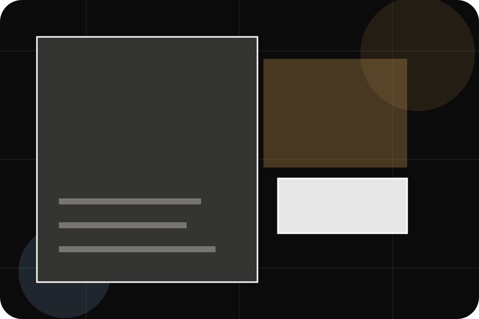
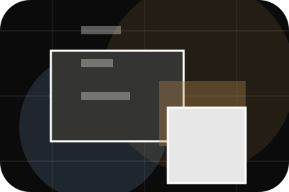
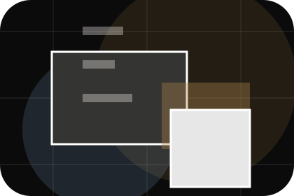
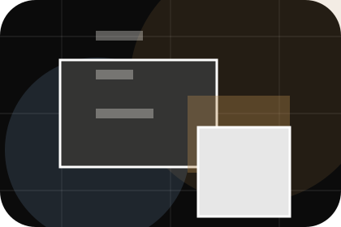
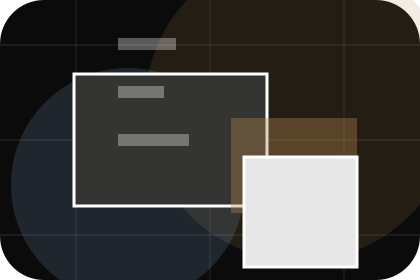
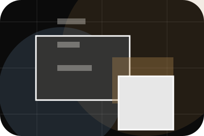
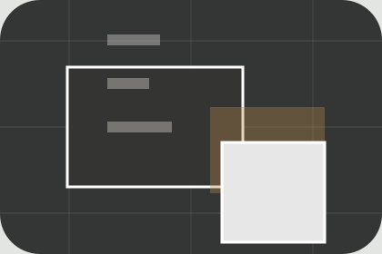

Context
Levels gives the page a specific angle instead of repeating the navigation label.
Tours / 01
Tours opens as a clear travel decision hub: what Atlas offers, who it helps, why it matters, and which route to take first.
The first screen combines positioning, proof, primary action, and fast internal navigation, so people can act immediately or compare the rest of the tours route with context.
Immersive trip hero
Select the closest route and Atlas keeps the next step, proof, and follow-up expectation aligned with wanderlust and practical planning.

Tours / 02
Activities adds editorial context to the tours route, using the dark destination magazine structure to support wanderlust and practical planning before visitors choose a next step.
Atlas uses journey story cards and focused copy to make the decision easier to scan, aligning the section with wanderlust and practical planning rather than filling space.
Explore ToursActivities gives the page a specific angle instead of repeating the navigation label.
The journey story cards show what to compare, what to avoid, and what matters most for travel, tourism & destination experiences visitors.
The final cue points to a useful internal route so the section keeps the journey moving.
Tours / 03
Levels adds editorial context to the tours route, using the dark destination magazine structure to support wanderlust and practical planning before visitors choose a next step.
Atlas uses journey story cards and focused copy to make the decision easier to scan, aligning the section with wanderlust and practical planning rather than filling space.
Explore ToursLevels gives the page a specific angle instead of repeating the navigation label.
The journey story cards show what to compare, what to avoid, and what matters most for travel, tourism & destination experiences visitors.
The final cue points to a useful internal route so the section keeps the journey moving.
Tours / 04
Durations adds editorial context to the tours route, using the dark destination magazine structure to support wanderlust and practical planning before visitors choose a next step.
Atlas uses journey story cards and focused copy to make the decision easier to scan, aligning the section with wanderlust and practical planning rather than filling space.
Explore Tours

Durations gives the page a specific angle instead of repeating the navigation label.
Tours / 05
Guides gives researching visitors a practical route into guides, checklists, and comparison material without leaving the site structure.
Each resource behaves like a useful internal link, giving cold and warm visitors a way to learn, compare, and return to the action path.
View ResourcesA useful entry point for visitors who need more context before they plan a trip.
A scannable comparison aid that makes research usable before the next decision.
A route back to support, services, or contact when the visitor is ready to act.
A useful entry point for visitors who need more context before they plan a trip.
Open resource
IndexA scannable comparison aid that makes research usable before the next decision.
Open resource
BriefA route back to support, services, or contact when the visitor is ready to act.
Open resourceTours / 06
Inclusions adds editorial context to the tours route, using the dark destination magazine structure to support wanderlust and practical planning before visitors choose a next step.
Atlas uses journey story cards and focused copy to make the decision easier to scan, aligning the section with wanderlust and practical planning rather than filling space.
Explore ToursInclusions gives the page a specific angle instead of repeating the navigation label.
The journey story cards show what to compare, what to avoid, and what matters most for travel, tourism & destination experiences visitors.
The final cue points to a useful internal route so the section keeps the journey moving.
Tours / 07
Safety adds editorial context to the tours route, using the dark destination magazine structure to support wanderlust and practical planning before visitors choose a next step.
Atlas uses journey story cards and focused copy to make the decision easier to scan, aligning the section with wanderlust and practical planning rather than filling space.
Explore ToursAtlas structures safety around context, judgment, and a clear next route so visitors can compare the block quickly before they plan a trip.
Plan TripTours / 09
Reviews converts customer proof into a useful buying signal: the problem, the experience, and what changed afterward.
Proof stays believable by focusing on situation, service experience, and practical change rather than vague praise or unsupported results.
Explore ToursWhat the visitor needed before choosing Atlas, written with enough context to feel real.
How the service, product, or support felt during the process, not just that it was good.

What became easier to decide, complete, buy, book, or trust after the interaction.
Tours / 10
Atlas closes the tours route with a clear action, a quick reminder of the value, and a low-friction way to plan a trip.
Visitors who are ready can use the primary action. Visitors who are still comparing can scan the section links, proof, and support routes before they plan a trip.
Plan TripThe final block keeps the choice simple: act now, compare one more proof route, or send enough detail for a focused response.
Plan Tripwanderlust and practical planning
A travel-planning site with dark editorial hero, trip story cards, itinerary accordions, and bespoke enquiry. Tours ends with a direct path to plan a trip, plus enough context for visitors who still need to compare.

Plan Trip